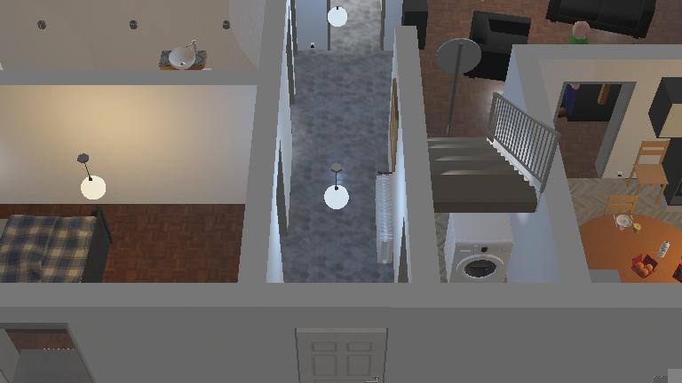

2026 PNU Tech Week · Physical AI Hackathon
A TurtleBot3 that maps an unknown apartment, finds two red apples and drives back to where it started, all on its own.
Team Alien
쳇제이야 · 칫수뛔이 · 텟까웅산 · 손옐래나
Who we are
쳇
칫
텟
손
Built with
Webots R2025a
TurtleBot3 Burger
Python
OpenCV
NumPy
Ultralytics YOLO11n
Team Alien · Autonomous Search & Rescue
02 / 14
The challenge
1
Find 2 red apples on the floor
2
Confirm each one up close
3
Drive back to the start point
What makes it hard
— No map: only the start pose is known
— Decoys: green, purple and orange apples, a red can
— A walking pedestrian, furniture, carpet edges

The Webots apartment world the robot has to search
Team Alien · Autonomous Search & Rescue
03 / 14
Our contribution
GIVEN · STARTER KIT
Keyboard driving demo
Sensor and camera demos
Color segmentation demo
YOLO11n model + demo
Ground-truth pose viewer
Apartment world + apples
Breakroom test worlds
BUILT BY US · tb3_sar · ~1,200 lines
Mission state machine
Compass calibration + scan matching
Occupancy grid + camera coverage map
Semantic object map + frontier scoring
Red-apple detector with 6 checks
A* + pure pursuit + DWA planner
Safety stop, tilt sensing, corner escape
Live map, camera and costmap views
Team Alien · Autonomous Search & Rescue
04 / 14
Mission logic
SCAN
EXPLORE
APPROACH
HOME
DONE
Spin 360° to map and look around
Head for the best frontier
Drive to the apple, confirm it
2 apples found: drive back
Stop: mission complete
New area? Look around 360°
False alarm, or apples still missing
Safety layer, every step: stop under 20 cm, back off, feel low obstacles by tilt.
Team Alien · Autonomous Search & Rescue
05 / 14
How it works
SENSE
Wheel encoders
Compass
Accelerometer
360° LiDAR
Camera
THINK
odometry + compass + LiDAR scan matching
log-odds occupancy grid, 5 cm cells
red-apple detector + YOLO object map
frontier choice + A* path
ACT
Pure pursuit
DWA planner
Wheel speeds
Safety + recovery
Team Alien · Autonomous Search & Rescue
06 / 14
Localization & mapping
01
Wheels measure distance; the compass, calibrated on the first spin, gives heading.
02
Nudge the pose up to ±15 cm until the scan lines up with known walls.
03
A 40 × 40 m map around the start, 5 cm cells, built from every scan.
4.49 m
of position drift corrected by 247 scan-match fixes in one 8-minute test run.
Team Alien · Autonomous Search & Rescue
07 / 14
Semantic exploration
01
Frontiers are map edges and floor the camera hasn't checked yet.
02
YOLO names objects; the LiDAR range pins them on the map.
03
Pick the frontier that is close and near kitchen-like things.
score = path − 3.0 × Σ prior × share × e^(−d / 1.5 m)
Lowest score wins. In a test run it picked (−0.3, −9.6) over the nearest frontier (−1.1, −10.6).
dining table
1.0
bowl
0.9
orange
0.9
refrigerator
0.8
oven
0.7
chair
0.5
couch
0.2
Team Alien · Autonomous Search & Rescue
08 / 14
Perception
01
Red — inside the red hue band
02
Round — circular, close to square
03
On the floor — below the horizon line
04
Right size — fits its distance on the floor
05
Whole — not cut off at the image edge
06
Not tall — no red continuing above it
3
matching sightings before the robot switches to APPROACH
2
close-up confirmations under 2 m before an apple counts
0
false alarms in our test runs, despite four decoys
Team Alien · Autonomous Search & Rescue
09 / 14
Motion & safety
person
goal
robot
Grey: safe options · dashed: would collide · green: chosen
GLOBAL · A*
A* on a map where walls are padded by the robot's size; re-planned every 1.5 s.
LOCAL · DWA
Tests 90 trajectories 1.5 s ahead on a live 3 m costmap, so people leave no ghosts.
SAFETY · every step
Under 20 cm: stop, wait, back off, re-plan. No progress in 3.5 s: recover.
Team Alien · Autonomous Search & Rescue
10 / 14
Safety
15 cm
height of the LiDAR scan above the floor
5 mm
height of a carpet edge: invisible to it
01
The camera spots small coloured objects on the floor and marks them before contact.
02
A tilt over 6° for 0.3 s means a carpet edge the camera can't see.
03
Reverse until level, then mark the spot so A* and DWA avoid it.
04
3 back-offs in 15 s: turn to the most open direction, pick a new goal.
Team Alien · Autonomous Search & Rescue
11 / 14
Testing in Webots
2 / 2
red apples found and confirmed
0
false alarms, despite four decoys
5
problems found in testing and fixed
| Problem in testing | Fix |
|---|---|
| Fell over on a carpet edge | Tilt sensing with the accelerometer |
| Missed the apple under a sink | Failed spots are retried, not ignored for good |
| Kept backing into a corner | Back-off limit, then turn to open space |
| Counted a found apple twice | Close-range positions, rescued apples remembered |
| Kept reversing next to home | Home reached within 0.6 m when a wall blocks |
Team Alien · Autonomous Search & Rescue
12 / 14
Vision
OUR ROBOT TODAY
A GUIDE ROBOT
Explores with no prior map
→
Guides through unfamiliar buildings
Dodges walking people live
→
Walks safely through crowds
Sees and feels low obstacles
→
Warns about steps, curbs, trip hazards
Finds objects with its camera
→
Finds doors, seats, lost keys
Remembers the way back
→
Leads its user home
STILL TO ADD
Voice + haptic handle
Depth camera for stairs
Walking pace, person-sized footprint
Outdoor: GPS, crosswalks
Team Alien · Autonomous Search & Rescue
13 / 14
Team Alien
Questions?
쳇제이야 · 칫수뛔이 · 텟까웅산 · 손옐래나
github.com/Xuf313/hackathon